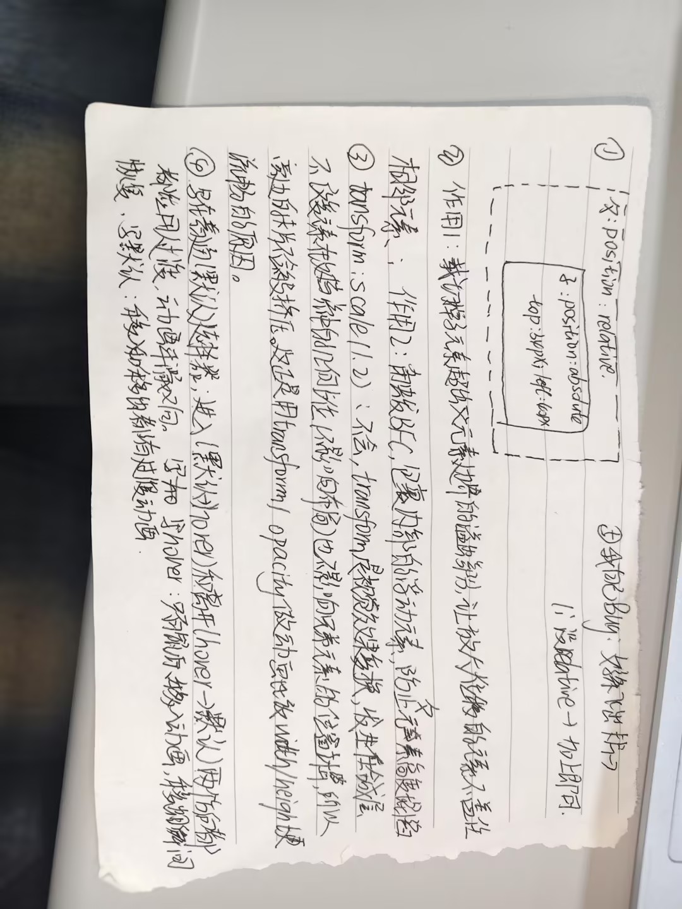

第一部分答案
① 图片放大跑出卡片 → .box li 加 overflow:hidden;
② 移出没动画 → transition 写到 .box img 默认态
③ 排版错乱 → .box li 加 position:relative;，.box 加
flex-wrap:wrap;
第二部分答案 + 6张图文卡片
2.1语义标签填空：header 、 nav 、 main 、 footer
防溢出li添加属性：overflow:hidden｜子绝父相li添加属性：position:relative
放大需要写哪两个选择器：.box img + .box li:hover img
transition 写默认选择器（移入移出都有动画）
奇数卡片使用什么伪类选择器：:nth-child(odd):hover
flex 两栏：display:flex ＋ gap:8px
-
 卡片1
卡片1
悬浮图片放大，文字展开 -
卡片2
偶数卡片底部展开 -
 卡片3
卡片3
奇数卡片铺满 -
 卡片4
卡片4
overflow 裁切放大图 -
 卡片5
卡片5
transition 写默认态 -
 卡片6
卡片6
无 float 布局
第三部分答案

第四部分答案（纯 CSS 回顶）
.to-top{
position: fixed;
left: 20px; bottom: 20px;
opacity: .5;
z-index: 999;
transition: all .3s;
}
.to-top:hover{
opacity: 1;
transform: scale(1.1);
}